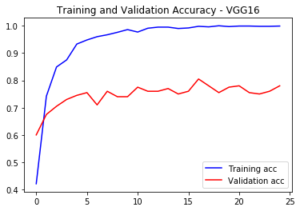
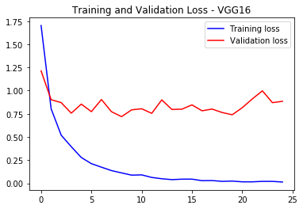

In [15]: runfile('C:/Users/DELL™/Desktop/VGG16/vgg16.py', wdir='C:/Users/DELL™/Desktop/VGG16')
WARNING: Logging before flag parsing goes to stderr.
W0901 06:50:33.348266 20932 deprecation_wrapper.py:119] From E:\anaconda\lib\site-packages\keras\backend\tensorflow_backend.py:74: The name tf.get_default_graph is deprecated. Please use tf.compat.v1.get_default_graph instead.
Reloaded modules: PIL, PIL._version, PIL.Image, PIL._util, PIL.ImageMode, PIL.TiffTags, PIL._binary, PIL._imaging
W0901 06:50:34.519945 20932 deprecation_wrapper.py:119] From E:\anaconda\lib\site-packages\keras\backend\tensorflow_backend.py:517: The name tf.placeholder is deprecated. Please use tf.compat.v1.placeholder instead.
W0901 06:50:36.318033 20932 deprecation_wrapper.py:119] From E:\anaconda\lib\site-packages\keras\backend\tensorflow_backend.py:4138: The name tf.random_uniform is deprecated. Please use tf.random.uniform instead.
W0901 06:50:38.692501 20932 deprecation_wrapper.py:119] From E:\anaconda\lib\site-packages\keras\backend\tensorflow_backend.py:3976: The name tf.nn.max_pool is deprecated. Please use tf.nn.max_pool2d instead.
W0901 06:50:40.410823 20932 deprecation_wrapper.py:119] From E:\anaconda\lib\site-packages\keras\backend\tensorflow_backend.py:174: The name tf.get_default_session is deprecated. Please use tf.compat.v1.get_default_session instead.
W0901 06:50:40.410823 20932 deprecation_wrapper.py:119] From E:\anaconda\lib\site-packages\keras\backend\tensorflow_backend.py:181: The name tf.ConfigProto is deprecated. Please use tf.compat.v1.ConfigProto instead.
Found 1000 images belonging to 10 classes.
Found 200 images belonging to 10 classes.
{'Letter_CannotRead': 0, 'Letter_a': 1, 'Letter_da': 2, 'Letter_e': 3, 'Letter_ga': 4, 'Letter_ha': 5, 'Letter_la': 6, 'Letter_sha': 7, 'Letter_ta': 8, 'Letter_va': 9}
W0901 06:52:59.769582 20932 deprecation.py:506] From E:\anaconda\lib\site-packages\keras\backend\tensorflow_backend.py:3445: calling dropout (from tensorflow.python.ops.nn_ops) with keep_prob is deprecated and will be removed in a future version.
Instructions for updating:
Please use `rate` instead of `keep_prob`. Rate should be set to `rate = 1 - keep_prob`.
W0901 06:52:59.878963 20932 deprecation_wrapper.py:119] From E:\anaconda\lib\site-packages\keras\optimizers.py:790: The name tf.train.Optimizer is deprecated. Please use tf.compat.v1.train.Optimizer instead.
W0901 06:53:01.566036 20932 deprecation.py:323] From E:\anaconda\lib\site-packages\tensorflow\python\ops\math_grad.py:1250: add_dispatch_support.<locals>.wrapper (from tensorflow.python.ops.array_ops) is deprecated and will be removed in a future version.
Instructions for updating:
Use tf.where in 2.0, which has the same broadcast rule as np.where
Train on 1000 samples, validate on 200 samples
Epoch 1/25
1000/1000 [==============================] - 5s 5ms/step - loss: 1.7026 - acc: 0.4210 - val_loss: 1.2132 - val_acc: 0.6000
Epoch 2/25
1000/1000 [==============================] - 3s 3ms/step - loss: 0.8039 - acc: 0.7420 - val_loss: 0.9019 - val_acc: 0.6750
Epoch 3/25
1000/1000 [==============================] - 3s 3ms/step - loss: 0.5193 - acc: 0.8490 - val_loss: 0.8711 - val_acc: 0.7050
Epoch 4/25
1000/1000 [==============================] - 3s 3ms/step - loss: 0.3956 - acc: 0.8750 - val_loss: 0.7571 - val_acc: 0.7300
Epoch 5/25
1000/1000 [==============================] - 3s 3ms/step - loss: 0.2784 - acc: 0.9330 - val_loss: 0.8547 - val_acc: 0.7450
Epoch 6/25
1000/1000 [==============================] - 3s 3ms/step - loss: 0.2125 - acc: 0.9480 - val_loss: 0.7733 - val_acc: 0.7550
Epoch 7/25
1000/1000 [==============================] - 3s 3ms/step - loss: 0.1743 - acc: 0.9600 - val_loss: 0.9040 - val_acc: 0.7100
Epoch 8/25
1000/1000 [==============================] - 3s 3ms/step - loss: 0.1375 - acc: 0.9670 - val_loss: 0.7729 - val_acc: 0.7600
Epoch 9/25
1000/1000 [==============================] - 3s 3ms/step - loss: 0.1125 - acc: 0.9760 - val_loss: 0.7196 - val_acc: 0.7400
Epoch 10/25
1000/1000 [==============================] - 3s 3ms/step - loss: 0.0884 - acc: 0.9860 - val_loss: 0.7927 - val_acc: 0.7400
Epoch 11/25
1000/1000 [==============================] - 3s 3ms/step - loss: 0.0912 - acc: 0.9770 - val_loss: 0.8046 - val_acc: 0.7750
Epoch 12/25
1000/1000 [==============================] - 3s 3ms/step - loss: 0.0637 - acc: 0.9910 - val_loss: 0.7552 - val_acc: 0.7600
Epoch 13/25
1000/1000 [==============================] - 3s 3ms/step - loss: 0.0496 - acc: 0.9950 - val_loss: 0.9004 - val_acc: 0.7600
Epoch 14/25
1000/1000 [==============================] - 3s 3ms/step - loss: 0.0401 - acc: 0.9950 - val_loss: 0.7974 - val_acc: 0.7700
Epoch 15/25
1000/1000 [==============================] - 3s 3ms/step - loss: 0.0450 - acc: 0.9900 - val_loss: 0.8001 - val_acc: 0.7500
Epoch 16/25
1000/1000 [==============================] - 3s 3ms/step - loss: 0.0454 - acc: 0.9920 - val_loss: 0.8465 - val_acc: 0.7600
Epoch 17/25
1000/1000 [==============================] - 3s 3ms/step - loss: 0.0287 - acc: 0.9980 - val_loss: 0.7826 - val_acc: 0.8050
Epoch 18/25
1000/1000 [==============================] - 3s 3ms/step - loss: 0.0300 - acc: 0.9960 - val_loss: 0.8014 - val_acc: 0.7800
Epoch 19/25
1000/1000 [==============================] - 3s 3ms/step - loss: 0.0213 - acc: 1.0000 - val_loss: 0.7641 - val_acc: 0.7550
Epoch 20/25
1000/1000 [==============================] - 3s 3ms/step - loss: 0.0244 - acc: 0.9970 - val_loss: 0.7398 - val_acc: 0.7750
Epoch 21/25
1000/1000 [==============================] - 3s 3ms/step - loss: 0.0162 - acc: 0.9990 - val_loss: 0.8160 - val_acc: 0.7800
Epoch 22/25
1000/1000 [==============================] - 3s 3ms/step - loss: 0.0161 - acc: 0.9990 - val_loss: 0.9109 - val_acc: 0.7550
Epoch 23/25
1000/1000 [==============================] - 3s 3ms/step - loss: 0.0211 - acc: 0.9980 - val_loss: 0.9979 - val_acc: 0.7500
Epoch 24/25
1000/1000 [==============================] - 3s 3ms/step - loss: 0.0211 - acc: 0.9980 - val_loss: 0.8705 - val_acc: 0.7600
Epoch 25/25
1000/1000 [==============================] - 3s 3ms/step - loss: 0.0142 - acc: 0.9990 - val_loss: 0.8849 - val_acc: 0.7800
200/200 [==============================] - 0s 156us/step
[INFO] accuracy: 78.00%
[INFO] Loss: 0.88486447930336


<Figure size 432x288 with 0 Axes>
In [16]: